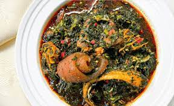

Afam soup

Traditional Afam soup
Traditional Afam soup is a dish that originated from the southern part of Nigeria, it is mostly cooked by the igbo tribe
ingredients
- Okazi or Afang leaf
- Spinach or Water leaf
- Meats
- Palm oil
- Scotch bonnet
- Crayfish
Steps
- seasoning and cooking your meat.
- add more orishirishi like dry fish or shrimp.
- season the stock
- pour in a 1/2 cup of palm oil, blended okazi (Afang leaf) and your chopped spinach or waterleaf
- Let it simmer for a 10 minutes and YOUR SOUP IS READY